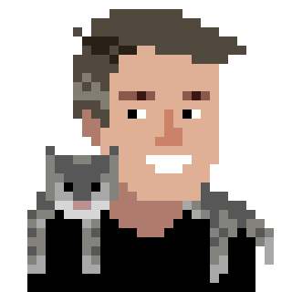

After starting undergrad as an art major, I somehow ended up with a PhD in mathematics and a second masters degree in computer science. Though some people like to really dig into a single area (which is great!), I personally find more joy in finding connections between fields and disciplines.
For me, the most fun part of research is finding creative ways to fit ideas and pieces of ideas together. That means I tend to follow interesting concepts wherever they take me: from geometric topology, to game design, to network science, neuroscience, artificial life, and complex systems. The more I learn, the more connections I see, and I'm very excited to find out what more both I and humanity in general can learn about emergence of complexity from simpler parts: whether in code, brains, or nature.
In both my teaching and my work, I try to keep things grounded and fun. Whether you are a student, colleague, or potential collaborator, I hope we will be able to chat soon!
An era forthcoming—wherein the study of complex systems and the spark of living computation shall unfold...alongside enduring devotions to networks, mind, and machine.
Bound to data and empirical craft—focusing topology and the learning of machines upon human and automaton minds, virtual geography, and even...dragons.
Concerned only with pure mathematics—above all, the geometry of lower dimensions, and the strange science of knots.